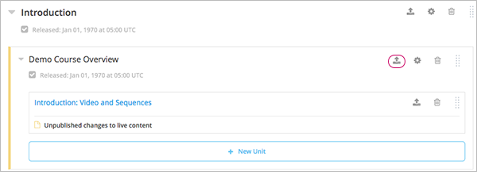

4.4. 构建课程小节¶
构建课程小节之前您必须了解以下信息：
- `What is a Subsection?`_
- `Viewing Subsections in the Outline`_
- `The Student View of a Subsection`_
- `Subsections and Visibility to Students`_
- `Release Statuses of Subsections`_
小节操作：
- Create a Subsection
- `Change a Subsection Name`_
- Set a Subsection Release Date
- Set the Assignment Type and Due Date for a Subsection
- Publish all Units in a Subsection
- Hide a Subsection from Students
- Delete a Subsection
4.4.1. 什么是小节？¶
小节是章节的组成部分，一个小节通常包括一个或多个单元。小节通常代表课程的某个主题，或者其他组织形式。 小节有时也被称为“课”或“学习顺序”。
4.4.2. 小节在课程大纲中的显示方式¶
下图呈现了三个收起的小节在大纲中的显示方式：

4.4.4. 小节与对学生可见性¶
学生无法观看未设置发布日期及发布日期未到的小节内容。
学生如果想观看已过发布日期的课程内容，必须满足以下三个条件：
- 父章节的发布日期已到。
- 单元发布完成。
- 发布单元没有对学生隐藏。
4.4.5. 小节发布状态¶
课程制作者能控制小节的发布状态。 只有当小节处于发布状态时，学生才能看见内容。 点击以下链接查看更多信息：
- `Scheduled with the Section`_
- `Unscheduled`_
- `Scheduled Later than the Section`_
- `Scheduled with Unpublished Changes`_
- `Released with Unpublished Changes`_
- `Released`_
4.4.5.1. 与章节同时发布¶
由于课程小节的发布日期默认与章节一致，因此一旦发布章节内容，学生就可以浏览小节中的内容。
下图展示了默认发布日期与所在章节发布日期相同的小节在课程大纲中的显示模式：
4.4.5.2. 未设置发布日期¶
如果未设置父章节的发布日期，那么新建的小节也自动默认未设置发布日期。
无论小节中的单元是否发布，学生都无法看见未发布的小节内容。
下图展示了未设置发布日期的小节在大纲中的显示模式：
除非您设置小节的发布日期，否则学生无法浏览该部分内容。
4.4.5.3. 晚于章节发布¶
小节的发布日期可以晚于章节的发布日期。
无论小节中的单元是否发布，学生都只有在小节发布日期时才能看见该部分内容。
下图中，小节的发布日期就晚于父章节的发布日期：
只有在发布日期到了后，学生才能看见该小节的内容。
4.4.5.4. 计划发布的小节中含有未发布修改¶
在父小节发布日期到达之前，您可以对已发布的单元进行更改。
这样，一旦发布父小节，学生就能看见该小节中最新版本的单元内容。 但是，如果您不重新发布更改后的单元，那么更改后的单元还是无法对学生显示。如下图所示：
4.4.5.5. 已发布的小节中含有未发布修改¶
如果您更改了已发布小节中的一个单元，您必须重新发布该单元，否则学生无法看见最新内容，如下图所示：
4.4.5.6. 已发布¶
学生可以浏览已发布小节中的内容，但并不是所有内容，只有小节中处于发布状态的单元才对学生可见，如下图所示：
4.4.5.7. 仅对教员可见内容¶
小节中可以包含只对教员可见的单元，即使发布该小节，学生也无法浏览只对教员开放的内容。如下图所示：
4.4.6. 创建小节¶
如何创建一个小节：
- 在“课程大纲”页面，首先扩展您要新建小节的章节。
- 单击章节下方的“新建小节”，如此，一个没有内容的新小节就出现在章节下方。
- 输入小节名，该名称会出现在学生的课件库中。 一个描述确切的名称将帮助学生找到内容的所在位置，也将帮助您在edX Insights中分析绩效时查找内容。
- Add units 到创建好的章节里。
我们建议您在创建小节的过程中 test course content 。
4.4.7. 更改小节名称¶
点击小节名称旁边的编辑按钮，输入新名称，点击“保存”。
4.4.9. 设置任务类型和截止日期¶
任务类型设置会作用到小节中所有的问题。
一旦您为小节设置了任务类型，那么该小节中的所有问题都会被归纳为这种任务类型。 例如，您将一小节中的任务类型设置成 家庭作业 ，那么这个小节中的所有问题都被归纳为“家庭作业”。
如何设置小节的任务类型及截止日期：
点击小节中的“设置”按钮，即弹出设置对话框。
选择任务类型：
选择截止日期。
点击 保存 。
详细信息请参见 设定计分政策.
4.4.10. 发布小节中的所有单元¶
点击小节中的“发布”按钮，发布新建及修改的单元：
Note
只有对小节做出修改后，才会出现“发布”按钮。
有关单元发布状态及对学生可见性等相关信息，请查看 单元的发布状态
4.4.11. 对学生隐藏小节¶
无论小节中的单元发布状态如何，您都可以对学生隐藏所有内容。
更多信息请参阅 对学生隐藏内容.
如何对学生隐藏小节内容
点击“设置”按钮。
弹出 设置 对话框。
点击 对学生隐藏 按钮
点击 保存 。
至此，所有内容都对学生隐藏了。
要对学生开放此小节，只需重复以上步骤，清除 对学生隐藏 复选框。
Warning
清除“对学生隐藏”复选框并不会将所有内容呈现给学生，特别是单独设置了对学生隐藏的单元，及尚未发布的内容。
4.4.12. 删除小节¶
删除小节就是删除小节里包含的所有内容。
Warning
删除的课程内容无法恢复。您可以将暂时不用的课程内容存放在一个章节中，并将该章节设置成“永不发布”。
如何删除小节：
- 点击小节中的“删除”按钮：
- 在弹出的确认对话框中选择“是”即可删除该小节。